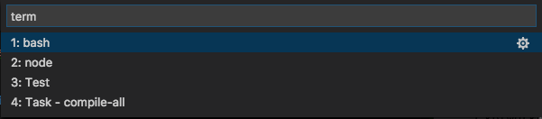
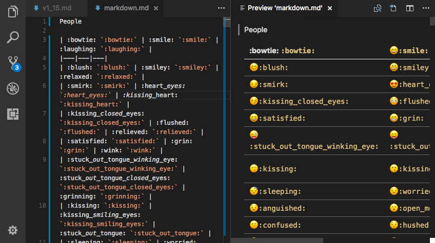
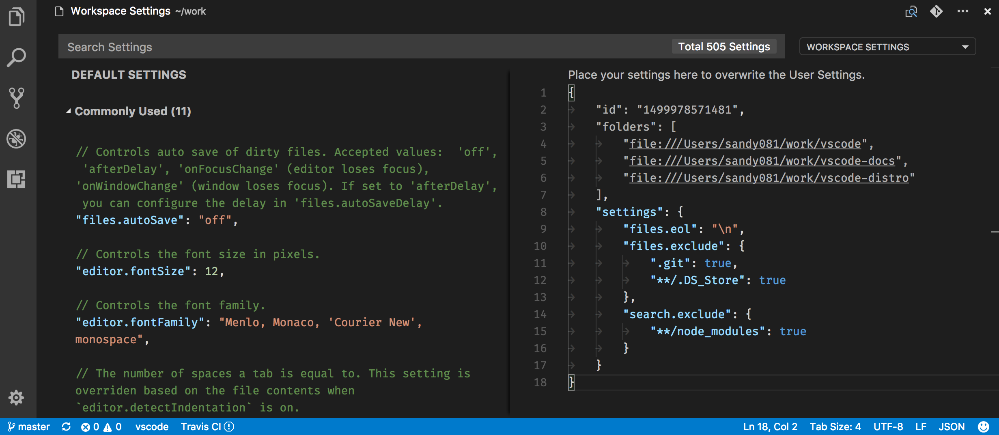
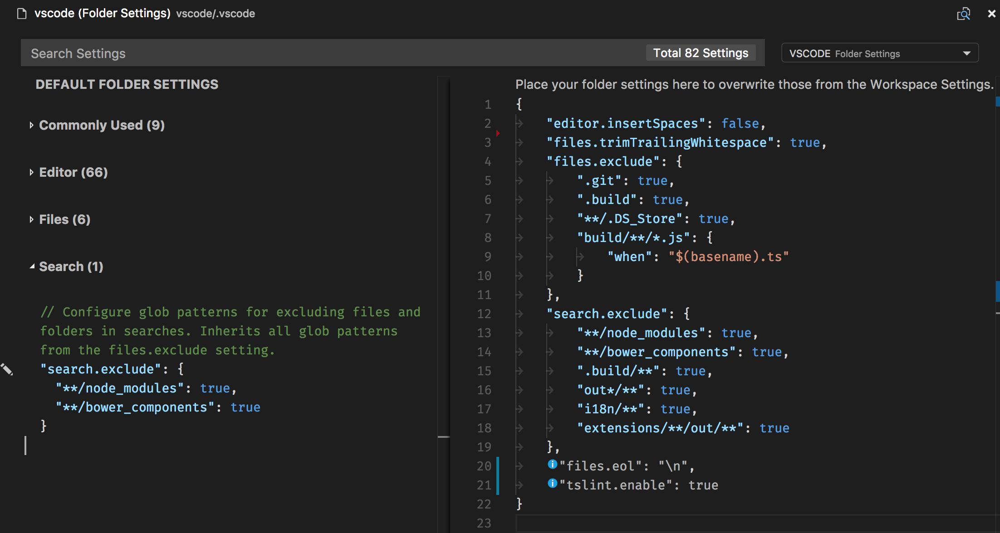
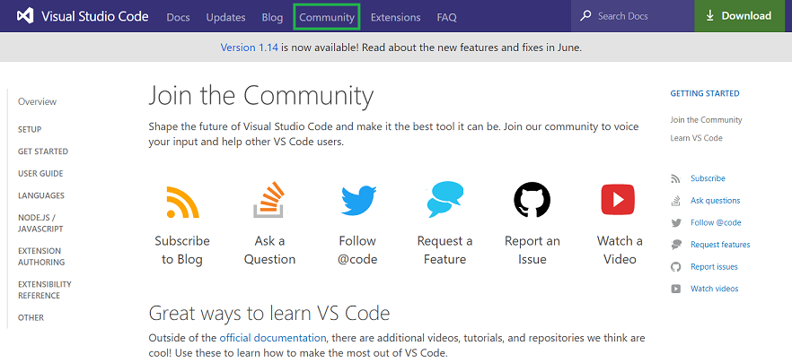

July 2017 (version 1.15)
Visual Studio Code 2017 7月のリリースへようこそ。今回のバージョンには数多くの重要な更新があり、ハイライトは次の通りです:
- Large file support - Improved performance for large files, no size limit on 64-bit machines.
- 64-bit Windows builds - Use your computer’s full address space with the 64-bit builds.
- Find in Markdown preview - Full search for Release Notes, Markdown preview, and Extensions.
- Auto-indent, Emmet 2.0 on by default - Source code auto-indenting and new Emmet support.
- Custom syntax highlighting - Easily adjust editor colors to your liking.
- Terminal environment variables - Preconfigure the Integrated Terminal environment.
- Color picker UI - Quickly create colors in your CSS, SASS, and Less files.
- Loaded Scripts Explorer - Easily review and step through loaded scripts during Node.js debugging.
- Markdown preview plugins - Add styles, scripts or plug-ins to Markdown previews.
- code.visualstudio.com updates - Tutorials for React, Angular and deploying Node.js to Azure.
- Preview: Multi-root workspaces - Settings and debug configurations across multiple projects (Insiders build).
オンラインでリリースノートを確認するには code.visualstudio.com の Updates に移動してください。
VS Code の重要な更新に関するアップデート情報は、リリースノートの次のセクションに配置しています。その他のアップデートは次の通りです:
- Editor - Predefined snippet choices, improved auto-indenting and diff editor.
- Workbench - Customizable Explorer sort order and view layout, prefilled Quick Open actions.
- Integrated Terminal - Improved switching, delete word keyboard shortcuts.
- Tasks - Less and Sass compiler output parsing, new Status Bar display.
- Extension Authoring - Multi-root support for debugging and settings, new Markdown Preview API.
Insiders: できるだけ早く新しい新機能を確認したいですか?夜間に更新する Insiders build をダウンロードすれば、最新のアップデートをすぐに試すことが可能です。
Editor
Large file support
大きなファイルはストレス テストによく使われます。現在、VS Code では行単位のテキスト バッファー表現を行っています。これにはいくつかの利点がありますが、(短い行の多いファイルで)特にメモリー使用量が多くなるという短所があります。
30MB もしくは 300K line を超えるファイルは大きなファイルとみなされ、場合によっては特別な処理がされます。トークン化、ラインガイド、折り返し折りたたみなど、大きなファイルで特定の機能を無効にすることでメモリー使用量を 50% 最適化することができました。また大きなファイルは、差分情報、リンク検出、単語ベースの補完を計算する Web werker に渡されることはありません。これは OS のメモリー使用量を軽減するのに役立ちます。
いくつかの最適化はすべてのファイルに影響しますが、小さなファイルではその効果が目立たないはずです。64bit インストールではハードコア ファイル サイズの 50MB 制限を廃止し、32bit インストールでは 300MB のファイル サイズ制限を設けることにしました。最適化の詳細については #30180 を参照してください。
Color Picker
今回のリリースで色をカスタマイズするカラー ピッカーを導入しました。エディターから取り出せる色の、色相、彩度、不透明度の構成に対応しています。またピッカーの上部にある色のカラー コードをクリックすることで、異なるカラー モード間で変更する機能も提供しています。ピッカーはドキュメント内のカラーを定義する部分にオーバーしているときホバー表示します。

プレビューを表示するために、RGBA, HSLA,Hex カラー モードをサポートする CSS, Sass, Lessファイルでピッカーを有効にしました。ピッカーの機能をより拡張し、将来的に拡張機能の作成者がカラー モデルを定義できるように提供する予定です。
Auto indentation
今回のマイルストーンでオートインデントを既定で有効にしました ("editor.autoIndent": true)。作業している言語(TypeScript, JSON, CSSなど)に固有なインデント規則がある場合は、入力、行移動、コードブロックの貼り付け時にインデントが調整されます。
Emmet 2.0
2 つ前のリリースで新しい Emmet (“Emmet 2.0”) を導入しました。これはプレビュー中に、ユーザーがオプトインで Emmet actions の候補/自動補完とマルチカーソルに Emmet 略語を表示するなどの新機能を試すことができました。今回のリリースで Emmet 2.0 とこれらの機能が既定で有効になっています。
Emmet 略語が提案/自動補完リストに表示されるようになったので、VS Code で Tab キーを使用する Emmet 略語はトリガーされません。このキーボード ショートカットを削除することで 2 つの問題が解決されました:
- ユーザーが Tab キーを使用してインデントを追加したいとき、予期しない Emmet 展開が発生します。
- ユーザーが実際に Emmet 略語を展開したいとき、提案リストの項目が挿入されます。
(Tab キー以外の)任意のキーボード ショートカットを editor.action.emmet.expandAbbreviation にバインドすることや Command Palette から Emmet: Expand Abbreviation を使用することは依然として可能です。
Custom Emmet Snippets
カスタム Emmet スニペットを使用する場合は、新しい Emmet スニペットで機能するようにすこし変更を行う必要があります。
- HTML: HTML のカスタム Emmet スニペットは、有効な略語でなければなりません。たとえば:
<ul><li></li></ul>の代わりにul>liを使用します。 - CSS: Name the custom Emmet snippets in CSS such that they only contain letters from the snippet value in the order that they appear in the latter. これにより提案リストの fuzzy matchng algorithm が正しい結果を作成します。たとえば
color: blackの名前としてbcやdarkcを使用しないでください。代わりにcbやcobを使用します。
新しい Emmet の詳細については Emmet 2.0 blog post を参照してください。
Support for snippet choices
スニペットを選択することでプレースホルダーに値を事前に入力できます。構文は ${<number>|option_1,...,option_n|} です。
次は固定された色のセットを指定するサンプルです:
|

最後に IntelliSense でスニペットを入力するとプレビューが表示されます。
Improved diff editor results
今回のリリースでは、見た目がよりよくなるように (Longest-Common-Substring アルゴリズムによって処理される) differences を調整する差分アルゴリズムをいくつか変更しました。
これは git diff の(これら heuristics の一部を組み込む)出力により近づくことを意味します。ただそれ以外の(空白を取り除いただけのような変更)とき結果は LCS を含まないので git diff とは異なりますが、私たちの提案はより評価されるものになるはずです。
Workbench
User definable syntax highlighting colors
Cody Hoover (@hoovercj) のおかげで、ユーザー設定でエディター構文ハイライト カラーをカスタマイズできるようになりました。これはフルの配色テーマを作成せずに簡単にエディターの配色を調節するのに便利です。

新しい配色は現在のテーマを上書きする形で適用されます。これはライブに適用され VS Code を再読み込みする必要がありません。
よくある一般的な構文には、シンタックストークン(‘comments’, ‘strings’, …) の事前構成が利用可能です。より多く指定したい場合は TextMate テーマのカラー規則を直接指定できます。

詳細については theme section を参照してください。
File Explorer sort order
Dmitry Zabello (@foreverest) のおかげで、エクスプローラーでファイルとフォルダーのソート方法を新しい設定 explorer.sortOrder で構成できるようになりました。次から選択できます:
filesFirst- ファイルを先にソートしますmixed- 区別せずにファイルとフォルダーをソートしますmodified- 最終変更時刻でソートしますtype- ファイルの種類でソートします
次は explorer.sortOrder: mixed を使用するときのエクスプローラーです

Launch Integrated Terminal from the File Explorer
ターミナルのフォルダーを開くためのコンテキスト メニュー項目(Open in Terminal)は既定で統合ターミナルのフォルダーを開きます。これを terminal.explorerKind 設定を使用して外部ターミナルを開くように設定できるようになりました。
Managing views
VS Code はエクスプローラーのカスタム ビューに対応しており、このレイアウトをカスタマイズできるようになれば便利です。今回のリリースでは次の項目ビューの並びと表示を変更できるようになりました。
- Explorer view
- Debug view
- Extensions view

セクションを D&D すると並び替えができ、コンテキストメニューでセクションを表示/非表示にできます。ビューの変更は VS Code の再起動後も保持されます。
New setting to close window when last editor closes
新しい設定を用意しましたwindow.closeWhenEmpty。これは最後のエディターが閉じられたときにウィンドウ(インスタンス)を閉じるべきかどうかを制御します。macOS でこの動作はインスタンスを閉じるのが一般的なアプリケーション動作です。
Note: この設定はフォルダーを開いていないウィンドウにのみ影響します。
Improved –wait support
VS Code は Git などの外部プログラムのエディターとして構成することができます(documentation)。--wait コマンド ライン引数は VS Code インスタンスを外部プログラムが閉じるまで保持するように使用されます。今回のリリースでは既知の問題を回避するためにこの機能を再実装しました 。
まず --wait を使用して開かれたインスタンスを記憶して、そのインスタンスが閉じるまで適切に待機します。これは --wait を使用している VS Code が既に実行されている間に追加のインスタンスをひらき、追加したウィンドウを閉じずにさらにウィンドウをひらくと 厄介な問題を起こすのを修正します。さらに、ウィンドウを閉じても通常はアプリケーションを終了しない macOS では、閉じた後にインスタンスを開始したプロセスにコントロールを戻すようにしました。
次に --wait を使用して開いたインスタンスの最後のエディターを閉じるとウィンドウを自動的に閉じるようになりました。⌘W (Windows Ctrl+F4, Linux Ctrl+W) を押してウィンドウヲ閉じることができます。
Note: 最後のエディターが閉じたときにウィンドウを閉じたい場合は、空のウィンドウ用の新しい
window.closeWhenEmpty設定を確認してください。
New theme color for title bar border
macOS の場合、上部にカスタム タイトル バーを表示します。新しい配色 titleBar.border をテーマや設定で定義してタイトル バーとエディター部分との境界線を描画することができます。
Compare dirty file with version on disk
Tobias Friemel (@tfriem) のおかげで、ダーティー(保存されていない)ファイルとディスク上のバージョンを比較して、最近の変更を素早く確認できるようになりました。

操作はエクスプローラーの OPEN EDITORS ビュー内でダーティ ファイルのコンテキストメニューから、もしくはグローバル コマンド Files: Compare Active File with Saved (⌘K D (Windows, Linux Ctrl+K D)) から見つけることができます。
Font aliasing (macOS only)
ワークベンチとエディター内のフォント スムージングを制御する新しい設定 workbench.fontAliasing (macOS) が追加されました。既定でフォントはサブピクセル方式でアンチエイリアス処理がされています。設定を antialiased に変更するとピクセルのレベルでフォントを滑らかにします(フォント全体がより細く見えるようになります)。これを none に設定するとフォント スムージングを無効にすることができます(テキストをぎざぎざな尖ったエッジで表示します)。
Remove entries from recently opened
最近開いたピッカー(⌃R (Windows, Linux Ctrl+R)) の各エントリーの隣に、リストからエントリーを削除する新しいアクション (X) が表示されるようになりました。

Quick Open command with prefix
コマンド workbench.action.quickOpen はプレフィックスを引数として受け取って Quick Open ピッカーを開き、任意のテキストを事前に挿入します。
たとえば、次のようにテキストをあらかじめ入力して Quick Open を表示するようにキーバインドを構成することができます:
|
拡張機能作成者はプログラムからコマンドを実行して引数を渡すことができます:
|
これに協力してくれた cristianhosu (@cristianhosu) のおかげです。
Search changes
検索ビューで変更を知っておく必要がある変更を行いました。1 つのフォルダーを開いている場合、./example は開いているフォルダーの一番上のディレクトリ example/ と一致します。example と入力するとワークスペース内の example と名前がついているすべてのフォルダーとファイルに一致します。これは example という名前のファイルと一致する以前の既定とは異なりますが、 example という名前の一番上のフォルダーのみと一致します。
また include/exclude パターンボックスで Use glob patterns が削除されていることに気づくかもしれません。新しい ./ シンタックスではもはや必要ないと考えているからです。globs を使用する検索の詳細については our search documentation を参照してください。
Integrated Terminal
Configure environment of terminal sessions
各プラットフォーム用の新しい設定 terminal.integrated.env.<platform> は新しいターミナルに追加の環境変数を追加することができます。
|
Terminal switching
クイック ピッカーを使用してアクティブな端末を切り替え、名前の変更ができるようになりました。Terminal: Switch Active Terminal コマンドか Quick Open でterm (with a space) を入力してください。

Better terminal session names on Windows
Windows で最初のシェルからプロセスを起動するときの既定のターミナル名を新しくしました。たとえばターミナル内で powershell.exe や cmd.exe を実行するとその名前が単純に ‘powershell’ や ‘cmd’ と表示されます。
Additional delete word keybindings in the terminal
統合ターミナルに単語を削除する既定のキーが追加されました:
Linux/Windows:
- Ctrl+Backspace: カーソル前の文字を削除
- Ctrl+Delete: カーソル後ろの文字を削除
macOS:
- Alt+Backspace: カーソル前の文字を削除
- Alt+Delete: カーソル後ろの文字を削除
これらはキーストロークをターミナルに渡すことで機能し、その結果いくつかの Windows シェルでは機能しません。
Force selection using Alt on macOS
ターミナル内のマウス モード(tmux など)でプログラムを実行すると、マウスが捕らえられるため、選択することはできません。マウス イベントが強制的にターミナル送信されるのではなく、選択を実行するようになるため Alt キーを押したままにすることができるようになりました。(?)
Tasks
Less and Sass compiler problem matchers
less と node-sass コンパイラーの出力を解析するために、2 つの新しい問題マッチャー(VS Code 内の問題を検出して表示する機能)を追加しました。問題マッチャーの名前は $lessc と $node-sass です。
Tasks Status Bar display
またタスクが実行されるとすぐに表示されるタスク用のステータス バー項目を追加しました。タスクのステータス バー表示をクリックすると、実行されたタスクの出力が表示されます。
Node Debugging
Loaded Scripts Explorer
前回の VS Code リリースでは、シンプルな Quick Pick UI を使用して Open Loaded Script コマンドを介して読み込まれたスクリプトを検索して開くことができました。
今回のリリースでは、デバッグ ビューにランタイムによって多くのスクリプトが読み込まれると自動的にすべてのスクリプトと更新に直接アクセスする、エクスプローラー(Loaded Scripts Explorer)を追加しました。

制限のある Quick Pick UI に対して、エクスプローラーは同時デバッグ セッションに対応しており、マルチルート ワークスペースで使用されている場合はフォルダーごとにスクリプトがグループ化されます。
Loaded Scripts Explorer の 2 つ目の利点は、拡張機能として実装され新しいデバッグ API の現実的な例とツリー表示に貢献する方法を示すことです。実装については here を参照してください。
Languages
Search in Markdown preview
Cody Hoover (@hoovercj) の PR により、リリースノート、Markdown preview、拡張機能の README ページなど webview コンテンツの検索ができるようになりました。

Linkifying in the Markdown preview
Markdown preview では URL のテキストが自動的にクリック可能なリンクに変換されるようになりました。この機能は "markdown.preview.linkify": false に設定すると無効化できます。
Support for Markdown preview plugins
Markdown preview のプラグイン用にスタイル、スクリプト、Markdown の拡張機能への対応を追加しました。
Preview styles
拡張機能は Markdown preview の見た目やレイアウトをカスタマイズするために CSS を提供できます:
VS Code Github Style extension はスタイルシートを使用して、Github のレンダリング Markdown のように Markdown preview を変更する例です。
Markdown it plugins
拡張機能は markdown-it plugin. に貢献して Markdown の構文を追加することができます。

emoji 対応を追加する markdown-it プラグイン VS Code Markdown Emoji extension を使用してこれを確認できます。
Preview scripts
最後に高度な機能のために、拡張機能は Markdown preview ないで実行されるスクリプトを提供します:

上記の VS Code Markdown Mermaid extension には mermaid diagrams と flowcharts を作成するスクリプトが追加されているのを確認できます。
New Markdown Preview Security Settings
Markdown preview は既定で HTTPS のイメージをブロックしています。コンテンツがブロックされるとプレビュー ウィンドウにポップアップが表示されます 。このポップアップをクリックするか Markdown: Change Preview Security Settings コマンドを使用することで、現在のワークスペースで Markdwon preview のセキュリティー設定を変更できます。

新しい Markdown preview のセキュリティー レベルについては Markdown documentation を参照してください。
Extension Authoring
New API to extend the Markdown preview
拡張機能の製作者は Markdown preview を拡張することができます。新しい API はスタイル、スクリプト、markdown-it 拡張機能のために 3 つの貢献ポイント を提供しています。
Proposed API for storing credentials
vscode.credentialsに資格情報を保存するための API (command-line flag に変更あり) を用意しました。バッキング ストアとして異なる OS の異なる資格情報ストアを使用する keytar node module に転送することで、基本的な読み込み/書き込み/削除操作が利用できます。GitHub の discussion に参加してみてください。
New API to open an editor or diff editor with a specific selection
showTextDocument メソッドと vscode.diff コマンドから使用できる新しいプロパティ selection: Range を使用することで既存の TextDocumentShowOptions を豊富にしました。これが提供されると、エディターは提供された範囲を表示して選択します。
Debug API updates
前回のリリース (vscode.debug.*) から提案されている proposed Debug API は修正し拡張しました。
デバッグは名前付きデバッグや複合構成、インメモリー構成のいずれかをとる startDebugging 関数を使用して開始することができます。名前付きの構成や変数はフォルダーのスコープ内でのみ定義されているので、フォルダー引数を追加する必要がありました。新しい onDidStartDebugSession イベントはデバッグ セッションが開始されたことを示してくれます。
現在アクティブなデバッグ セッションは activeDebugSession 変数として利用でき、onDidChangeActiveDebugSession イベントで報告されます。
Custom Debug Adapter Protocol requests は DebugSession.customRequest を使用してデバッグ セッションに送信でき、対応するカスタム イベントは onDidReceiveDebugSessionCustomEvent イベントで報告されます。
Debug Contributions
デバッグ サイド バーへのビューの貢献
デバッグ サイド バーにビューを提供できるようになりました。
|
package.json で変数置換がサポートされなくなります
package.json の debuggers の program and とruntime 属性の変数置換対応を中止する予定です。この理由は 2 つあります: まず変数置換が 2 つの属性にのみ対応し、packgage.json のすべての属性に対しては機能しないことを説明するのが難しいことです。つぎに、マルチルートフォルダーではこの機能を有益な方法でサポートすることが困難なことです。
このリリースでは変数置換を deprecate し、8 月に機能を削除する予定です。この機能を取りやめることが難しい場合は here にコメントしてください。
Debug Adapter Protocol
New process event
デバッグされているプロセスに関するプロセス ID とその他の情報を伝える新しい process イベントが追加されました。
presentationHint 属性用の新しいnormal enum値
完全性のために、既定値 normal は Source 型の presentationHint 属性に追加されました。
New API for multi-root workspaces
マルチルート ワークスペース用に新しい複数のAPI が追加されました 。”single root workspace” workspace.rootPath 変数は廃止されます。拡張機能の作成者はエディターで開いた現在のフォルダーのリストを表す WorkspaceFolder 配列の workspace.workspaceFolders を使用する必要があります。フォルダーが追加または削除されたときに発火する新しいイベントと指定したリソースのワークスペース フォルダーを見つける getWorkspaceFolder 関数が用意されています。
Icon for root folders
アイコンテーマの作成者はマルチルートへの対応を準備してください:
ルート フォルダーを他のフォルダーとは異なる方法で比較表示するのに使用できる 2 つの新しいアイコン カテゴリー rootFolder と rootFolderExpanded を追加しました。たとえば、エクスプローラーではこのアイコンと最近開いたワークスペースのリストが使用されます。

Configuration scopes
configuration 拡張機能ポイントに貢献する設定を次のスコープに分類できるようになりました:
window: Window 固有の構成。VS Code ウィンドウに適用することができ、ユーザーとワークスペース設定で構成することができます。resource: リソース固有の構成。ファイルやフォルダーのようなリソースに適用することができフォルダーはユーザー、ワークスペース、フォルダー設定に構成することができます。
|
この分類は Configuration API をとおしてマルチルート ワークスペースのリソースに対する設定を構成するために必要です。
Configuration API
Configuration API はマルチルート ワークスペースでグローバル、ワークスペース、フォルダーレベルの設定をサポートするように拡張されました。これによりリソースの構成を尋ねることができ、ユーザー、ワークスペース、フォルダー設定でリソースをインスペクト及び更新できます。
次にマルチルート ワークスペースのフォルダー設定でリソースの構成を読み書きする例を示します:
|
Note: 既存の Configuration API に大きな変更はありません。
Preview: Multi Root Workspaces
Note: マルチルート機能は安定版で利用できるまでは Insider ビルドでのみ使用可能です。試すには https://code.visualstudio.com/insiders から Insiders ビルドを入手してください。
1 つの VS Code インスタンスで複数のフォルダー(issue #396)を開くために対応を進めてきました。前回のリリースではこの機能のプレビューを用意しました(1.14.0 release notes)。
今回のスプリントでは、マルチルート ワークスペースを現実的なコンセプトにすることに重点をおいていました。
Introducing “Workspaces”
ワークスペースとは 1 つのウィンドウ(インスタンス)に複数のフォルダーを開くときに UI に表示される新しいコンセプトです。ワークスペースはウィンドウ内で開いておきたいファイルを記述するためのシンプルな構成ファイルをしています。たとえば VS Code の開発では 3 つのフォルダーを頻繁に使用します:
上記のスクリーンショットからわかるように、ワークスペース構成ファイルには設定用のセクションも含まれています。あなたが設定する任意の Workspace Setting も最終的にこのファイルになります(ワークスペース設定については下記を参照してください)
空のウィンドウや単一フォルダーのウィンドウにフォルダーを追加すると、ウィンドウは “Untitled Workspace” になります。現在この移行にはウィンドウの再読み込みが必要です(下記の映像を確認してください)。将来的にはウィンドウを再読み込みしなくても、スムーズに移行することができると考えています。

Untitled Workspace
ワークスペースを保存しない限り、 “Untitled Workspace” として表示されます。ワークスペースを保存場所たとえばデスクトップなどに保存するまで、ワークスペースを保存する必要はありません。無題のワークスペースはそれを使用しているウィンドウが開かれている限り存在します。無題のワークスペースを含んでいるウィンドウヲ閉じようとすると、保存するかどうかを求められます:
Saved Workspaces
保存したワークスペースは .code-workspace ファイルをダブルクリックするか File メニュー下の Open Workspace… で開くことができます:
このあとワークスペースをディスク上の任意の場所に保存する Save Workspace As… アクションが表示されるはずです。VS Code ワークスペースのファイル拡張子は .code-workspace であり、将来的にフォルダーに相対的パスを設定できるようにすることで、これらのファイルを簡単に共有できるようにする予定です。
ワークスペースはフォルダーと同様に表示されます。最近開いたワークスペースのリストから開くこともできます;

ワークスペースでは名前に追加の (workspace) 接尾辞がつきます。
Workspace Settings
前述のように、新しいワークスペースのコンセプトにはワークスペースの設定を構成するセクションを含むワークスペースの構成ファイルが導入されました。マルチルート ワークスペースではこのファイルが、ワークスペース設定をひらくと表示されます。またこのファイルにはワークスペース設定に関連しないその他のセクションも含まれています。あまり目立たないようにするために、エディターではそれを薄く表示します。今後はユーザー設定と同様に一部のみを表示することで、experiece を改善していきます。

Folder Settings
1 つのワークスペースで複数のルート フォルダーを使用すると、各ルート フォルダーに .vscode フォルダーを用意してそのフォルダーに適用する設定を定義することができます。設定エディターのドロップダウンからフォルダー設定を開くことが可能です。

フォルダーを選択することでそのフォルダーの設定が開きます。

resource 固有の設定だけがフォルダーレベルで適用され、window 固有の設定は適用されません。左に表示する既定の設定エディターにはフォルダー レベルで適用できる設定のみが表示されます。window 固有の設定がフォルダー設定に存在する場合、これらは情報アイコンでうすく表示されます。

window と resource 固有の設定を知るには Configuration scopes を参照してください。
Multi-root debugging
複数の launch.json ファイルを使用するマルチルート ワークスペース設定を開くと、デバッグ ドロップダウンにはすべての構成が表示されます:

構成で使用されている変数(たとえば ${workspaceRoot})はそれらが所属するフォルダーに対して相対的に解決されます。
Multi-root Search
Keegan Carruthers-Smith からの PR のおかげで、マルチルートワークスペースでの検索結果はフォルダーごとにグループ化されました。
マルチルート ワークスペースを開いているとき、”files to include” ボックスで ./ を使用して 1 つのルート フォルダーを検索して選択することができます。たとえば、./project1/**/*.txt を入力すると project1/ ルート フォルダー下のすべての .txt ファイルを検索します。
Windows 64 bit
Visual Studio Code 64bit ビルドは WIndows の Stable で利用できるようになりました。これらは Setup Installer 形式と Zip archive で提供されます。私たちは Windows に 64bit バージョンを紹介するメッセージボックスを表示する予定です。次がダウンロードリンクです:
Stable Windows 64-bit: Installer | ZIP archive
Insiders Windows 64-bit: Installer | ZIP archive
Note: Setup Installer を使用する場合、64bit ビルドをインストールする前に 32bit バージョンをアンインストールする必要があります。
Note: すべての設定と拡張機能は 64bit バージョンにアップグレードしたときも保持されます。
New commands
| Key | Command | Command id |
|---|---|---|
| ⌘K D (Windows, Linux Ctrl+K D) | Compare a dirty file with the version on disk | workbench.files.action.compareWithSaved |
| ⌥Backspace (Windows, Linux Ctrl+Backspace) | Delete word left in terminal | workbench.action.terminal.deleteWordLeft |
| ⌥Delete (Windows, Linux Ctrl+Delete) | Delete word right in terminal | workbench.action.terminal.deleteWordRight |
New documentation
https://code.visualstudio.com ウェブサイトを製品のリリースとは別のタイミングで更新しています。そのため最新の一部更新の内容を逃すことがあるかもしれません。
Community
Twitter, Stack Overflow, GitHub をすばやく利用できるように Community ページを追加しました。VS Code がホストされているコミュニティーが作成したリンクは PluralSight, Scotch.io, LinkedIn Learning があります。

Tutorials
React, Angular, Node.js Deployment to Azure 用のチュートリアルを作成しました。これらのチュートリアルではサンプル プロジェクトを作成して VS Code を使用して賢いコード編集やデバッグを解説しています。

Thank You
最後になりましたが、VS Code をより良いものへするために協力してくれた次の方々に多大なる感謝を込めて:
vscodeへの貢献:
- Andrew Arnott (@AArnott): Add *.props as a recognized file extension for XML PR #30052
- Igor Polishchuk (@amadare42): QuickPickOptions typings fix PR #30819
- Bugra Cuhadaroglu (@BugraC): Added Enabled View to Extension Viewlet PR #30367
- Christopher Leidigh (@cleidigh)
- @cristianhosu: Add prefix argument to QuickOpen command (CTRL+P) PR #28952
- Eric Amodio (@eamodio): Use configuration for pinned default (Fixes #26184) PR #27357
- Felix Becker (@felixfbecker): Switch to npm5 PR #29576
- Dmitry Zabello (@foreverest)
- Matt Fehskens (@gonzofish): Added Enabled View to Extension Viewlet PR #25974
- Cody Hoover (@hoovercj)
- @lslv1243: Fix typo PR #30653
- @mihailik: Ctrl-T to use word under cursor or current selection PR #30021
- Nick Snyder (@nicksnyder): Remove unnecessary Math.min PR #29902
- Praveen Puglia (@praveenpuglia): Fix “No Results” error message color in find widget PR #30746
- Priit Haamer (@priithaamer): Add workbench.fontAliasing configuration option PR #30628
- @rianadon: Properly format file path on when dragging and dropping a tab into the integrated terminal in Windows PR #30070
- Rohith Reddy Kumbharkar (@RohithKumbharkar): Add functionality to toggle break rendering mode for Markdown preview PR #28713
- Vincent Sisk (@sappharx): Fix typo in src/vs/base/common/arrays.ts PR #30949
- Ryan Stringham (@stringham): Add history navigation for file include/exclude patterns in the search pane. Remember history between sessions. PR #27476
- Tobias Friemel (@tfriem): Show unsaved file modifications by opening a diff view PR #30210
These are the closed bugs and these are the closed feature requests for the 1.15 update.
Contributions to vscode-node-debug:
- Gary Ewan Park (@gep13): (typo) Minor correction PR #154
Contributions to vscode-chrome-debug:
- Matt Jimison @mjimison: Update README.md PR #472
Contributions to vscode-json-languageservice:
- Adam Voss (@adamvoss): Add null check to prevent service from crashing PR #7
Contributions to vscode-css-languageservice:
- Praveen Puglia (@praveenpuglia)
- Yuval Greenfield (@ubershmekel): text-decoration-color update PR #30
Contributions to vscode-tslint:
Contributions to vscode-debugadapter-node:
- Holger Benl (@hbenl): testsupport: add missing requests to DebugClient PR #120
Contributions to vscode-recipes:
- Cyril DURAND (@cyrildurand): Update README.md PR #13
Contributions to vscode-github-issues-prs:
- Jens Hausdorf (@jens1o): Add action for creating issues PR #8
- 道化師 (@wraith13): Fix parsing of repository names with dots PR #17
Contributions to localization:
Transifex でコミュニティーによる多言語化を開始してから 4 ヶ月です。現在TransifexのVS Code project](https://aka.ms/vscodeloc)チームには300人以上のメンバーがいます。新しい翻訳の提供、翻訳への投票、プロセスの改善案による貢献に感謝します。
このリリースでトップ貢献者のスナップショットです。貢献者のリストを含むプロジェクトの詳細についてはhttps://aka.ms/vscodeloc.を参照してください。
- French: Jonathan Menzel, Antoine Griffard.
- Italian: Aldo Donetti, Luca Nardi.
- German: Carsten Kneip.
- Spanish: Roberto Fonseca, dtriana, Jorge Serrano Pérez, Alberto Poblacion, Christian Eduardo Palomares Peralta, Andy Gonzalez.
- Russian: Valeriy Schepak, Nikita Gryzlov.
- Japanese: Tomoaki Yoshizawa, EbXpJ6bp, Yosuke Sano, Yuichi Nukiyama, Yuki Ueda, Tempura sukiyaki.
- Chinese (Simplified): Aifen Qin, 林昊, YF, Joel Yang, Zijian Zhou, Alan Tsai, Zijian Zhou, 陈嘉恺, Ricky Wang.
- Chinese (Traditional): Alan Liu, Alan Tsai, Duran Hsieh, Ke-Hsu Chen, Wei-Ting(DM), Ricky Wang.
- Portuguese (Brazil): Bruno Sonnino, Roberto Fonseca, Frederico Oliveira, Luan Moreno Medeiros Maciel, Rodrigo Crespi, Lucas Miranda.
- Hungarian: Tar Dániel.
- Turkish: Adem Coşkuner, Ata Binen, Ali Oğuzhan Yıldız.
- Dutch: Gerald Versluis, Jeroen Hermans, Sander van de Velde, Jasper van Merle.
- Indonesian: eka priya.
- Polish: Patryk Adamczyk, Patryk Zawadzki, Albert, Mateusz Wyczawski, KarbonKitty.
- Portuguese (Portugal): Mike C.